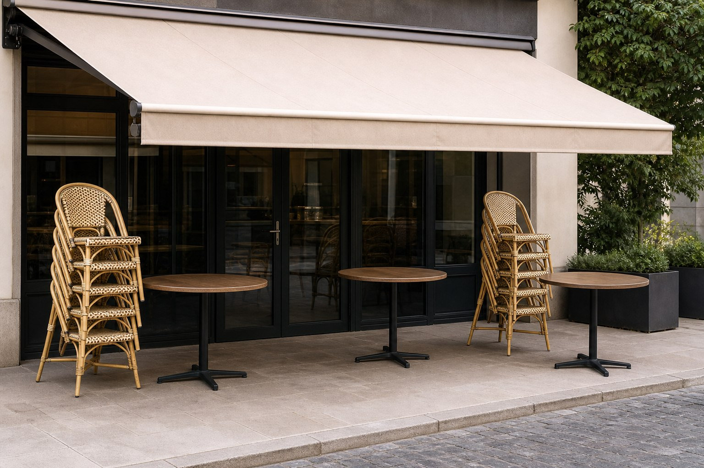
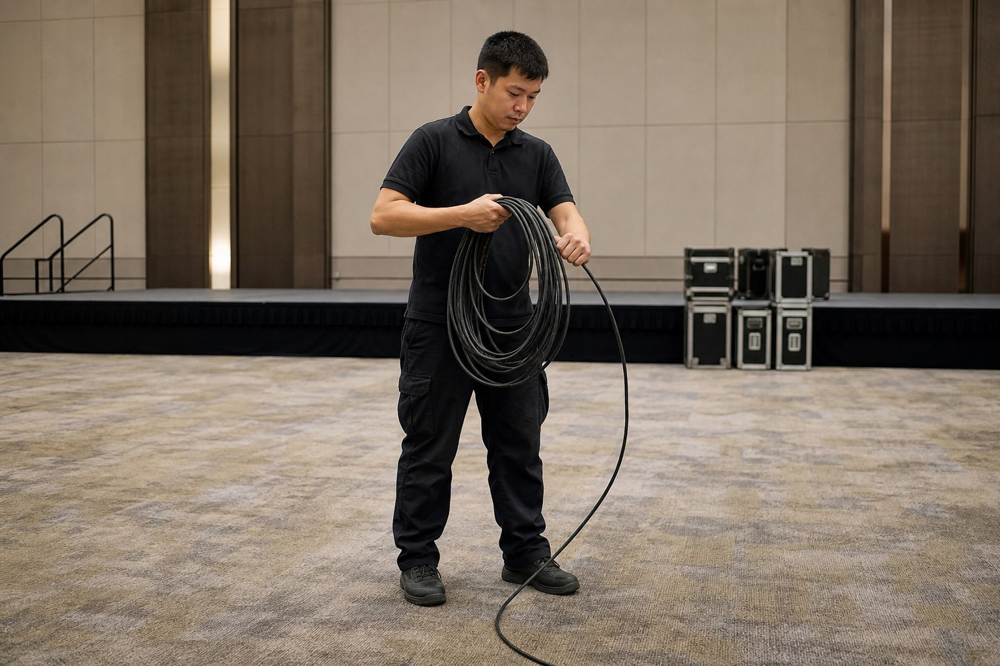

Directions: For each question, you will listen to four short statements about a photograph. Select the statement that best describes what is happening in the picture.
Question 1

听 4 句陈述，选出最符合照片的一句（只读一遍）
1.Choose the statement that best describes the photograph.
ACustomers are being served at the tables.
BThe tables have been covered with tablecloths.
CSeveral chairs have been stacked beside cafe tables.
DThe awning has been folded above the entrance.
录音原文 / 参考描述
照片内容：幾張椅子堆疊在咖啡館桌子旁。
A:Customers are being served at the tables.
B:The tables have been covered with tablecloths.
C:Several chairs have been stacked beside cafe tables.
D:The awning has been folded above the entrance.
解析 / Explanation
C. 數張椅子整齊堆疊在咖啡館桌子旁。桌面沒有桌巾或顧客，遮陽棚則是展開狀態。
Question 2

听 4 句陈述，选出最符合照片的一句（只读一遍）
2.Choose the statement that best describes the photograph.
AThe floor is being cleaned with a machine.
BA cable is being connected to a wall outlet.
CA technician is coiling an electrical cable.
DA technician is carrying a speaker onto a stage.
录音原文 / 参考描述
照片内容：一名技術人員正在捲收電纜。
A:The floor is being cleaned with a machine.
B:A cable is being connected to a wall outlet.
C:A technician is coiling an electrical cable.
D:A technician is carrying a speaker onto a stage.
解析 / Explanation
C. 技術人員雙手整理多圈電纜，正在將它捲收。電纜沒有接到插座，也沒有人搬喇叭或清潔地面。
Question 3
听 4 句陈述，选出最符合照片的一句（只读一遍）
3.Choose the statement that best describes the photograph.
ASome equipment is being loaded into a truck.
BA technician is inspecting a row of solar panels.
CThe panels are covered with snow.
DA worker is painting the roof.
录音原文 / 参考描述
照片内容：一名技術人員正在檢查一排太陽能板。
A:Some equipment is being loaded into a truck.
B:A technician is inspecting a row of solar panels.
C:The panels are covered with snow.
D:A worker is painting the roof.
解析 / Explanation
B. 技術人員跪在太陽能板旁，正使用儀表檢查設備；屋頂上沒有積雪、油漆作業或卡車。
Question 4
听 4 句陈述，选出最符合照片的一句（只读一遍）
4.Choose the statement that best describes the photograph.
AThe storage shelves are completely empty.
BA ladder has been folded against a wall.
CA worker is placing a box on a high shelf.
DSome boxes are being carried outdoors.
录音原文 / 参考描述
照片内容：一名工作人員正在把箱子放上高處的架子。
A:The storage shelves are completely empty.
B:A ladder has been folded against a wall.
C:A worker is placing a box on a high shelf.
D:Some boxes are being carried outdoors.
解析 / Explanation
C. 工作人員站在梯子上，雙手正把紙箱放到較高的貨架。貨架並非空的，梯子也沒有收起。
Question 5
听 4 句陈述，选出最符合照片的一句（只读一遍）
5.Choose the statement that best describes the photograph.
AA woman is tapping an access card on a turnstile reader.
BThe glass doors are being cleaned.
CSome luggage is being carried through the lobby.
DA receptionist is arranging flowers on a counter.
录音原文 / 参考描述
照片内容：一名女子正在旋轉閘門的讀卡機上感應門禁卡。
A:A woman is tapping an access card on a turnstile reader.
B:The glass doors are being cleaned.
C:Some luggage is being carried through the lobby.
D:A receptionist is arranging flowers on a counter.
解析 / Explanation
A. 女子將門禁卡靠近旋轉閘門的讀卡區。她沒有整理花卉、清潔玻璃門或搬運行李。
Question 6
听 4 句陈述，选出最符合照片的一句（只读一遍）
6.Choose the statement that best describes the photograph.
AA bicycle is being loaded onto a vehicle.
BA commuter is fastening a bicycle to a rack.
CThe bicycle's rear tire is being replaced.
DSeveral cyclists are riding past an office.
录音原文 / 参考描述
照片内容：一名通勤者正在把自行車鎖在停車架上。
A:A bicycle is being loaded onto a vehicle.
B:A commuter is fastening a bicycle to a rack.
C:The bicycle's rear tire is being replaced.
D:Several cyclists are riding past an office.
解析 / Explanation
B. 通勤者將鎖具環繞自行車車架與停車架，正在固定自行車；畫面沒有車輛、換胎或其他騎士。
PART 2 — Question-Response（7–31）
Directions: You will hear a question or statement followed by three responses. Select the best response to the question or statement.
Question 7
听一句问话/陈述 + 三个回应，选出最恰当的回答
7.Select the best response.
AShe bought it near the station.
BOnly the final version needs approval.
CI prefer the window seat.
录音原文 / Transcript（问句 + 三个回应）
Do all drafts have to be reviewed by legal?
She bought it near the station.
Only the final version needs approval.
I prefer the window seat.
解析 / Explanation
B. 問句若涉及草稿或版本是否都需核准，Only the final version needs approval 直接回應核准範圍。
Question 8
听一句问话/陈述 + 三个回应，选出最恰当的回答
8.Select the best response.
AThe printer is next to the elevator.
BI chose the vegetarian option.
CNot yet, but I expect them before noon.
录音原文 / Transcript（问句 + 三个回应）
Have the laboratory test results arrived?
The printer is next to the elevator.
I chose the vegetarian option.
Not yet, but I expect them before noon.
解析 / Explanation
C. Have the results arrived? 問結果到了沒，Not yet, but... 是自然且資訊完整的回答。
Question 9
听一句问话/陈述 + 三个回应，选出最恰当的回答
9.Select the best response.
AWe sent three sales representatives.
BThe clients requested itemized bills.
CThey're still waiting for the director's signature.
录音原文 / Transcript（问句 + 三个回应）
Haven't the revised invoices been sent to the clients?
We sent three sales representatives.
The clients requested itemized bills.
They're still waiting for the director's signature.
解析 / Explanation
C. 問發票是否已寄出；still waiting for... 間接表示尚未寄出並說明原因。
Question 10
听一句问话/陈述 + 三个回应，选出最恰当的回答
10.Select the best response.
AOnly if we ordered before noon.
BAt the loading dock.
CThe invoice was printed yesterday.
录音原文 / Transcript（问句 + 三个回应）
Didn't the supplier agree to cover the rush fee?
Only if we ordered before noon.
At the loading dock.
The invoice was printed yesterday.
解析 / Explanation
A. 否定問句詢問供應商是否同意負擔急件費；Only if... 說明該承諾附帶的條件，是最切合的回應。
Question 11
听一句问话/陈述 + 三个回应，选出最恰当的回答
11.Select the best response.
AIt is stored in the supply cabinet.
BThe invoice includes tax.
CI'll postpone the switchover, then.
录音原文 / Transcript（问句 + 三个回应）
The backup server still hasn't synchronized with the billing system.
It is stored in the supply cabinet.
The invoice includes tax.
I'll postpone the switchover, then.
解析 / Explanation
C. 備援伺服器尚未同步，合理後續是延後系統切換；then 表示根據前述狀況採取決定。
Question 12
听一句问话/陈述 + 三个回应，选出最恰当的回答
12.Select the best response.
AThey were very expensive.
BAt the post office.
CNo, the printer stopped working.
录音原文 / Transcript（问句 + 三个回应）
Haven't the invoices been mailed yet?
They were very expensive.
At the post office.
No, the printer stopped working.
解析 / Explanation
C. 否定疑問句仍依事實回答；此處說明尚未寄出的原因。
Question 13
听一句问话/陈述 + 三个回应，选出最恰当的回答
13.Select the best response.
AThat sounds like a good idea.
BThe proposal was approved.
CLunch is included.
录音原文 / Transcript（问句 + 三个回应）
Why don't we review the proposal after lunch?
That sounds like a good idea.
The proposal was approved.
Lunch is included.
解析 / Explanation
A. Why don't we...? 是提議。
Question 14
听一句问话/陈述 + 三个回应，选出最恰当的回答
14.Select the best response.
AThe aisle is narrow.
BI'll check what is available.
CThe flight was canceled.
录音原文 / Transcript（问句 + 三个回应）
Could I get an aisle seat, please?
The aisle is narrow.
I'll check what is available.
The flight was canceled.
解析 / Explanation
B. 服務情境中應確認座位供應狀況。
Question 15
听一句问话/陈述 + 三个回应，选出最恰当的回答
15.Select the best response.
ACall now, in case the office closes early.
BThe supplier called yesterday.
CTomorrow is a holiday.
录音原文 / Transcript（问句 + 三个回应）
Should I call the supplier now or wait until tomorrow?
Call now, in case the office closes early.
The supplier called yesterday.
Tomorrow is a holiday.
解析 / Explanation
A. 選擇問句應直接給建議。
Question 16
听一句问话/陈述 + 三个回应，选出最恰当的回答
16.Select the best response.
AThe copier was repaired.
BI paid by credit card.
CYes, that would be helpful.
录音原文 / Transcript（问句 + 三个回应）
Would you like me to make a copy of the receipt?
The copier was repaired.
I paid by credit card.
Yes, that would be helpful.
解析 / Explanation
C. Would you like me to...? 是主動提供協助，最自然的是接受或婉拒。
Question 17
听一句问话/陈述 + 三个回应，选出最恰当的回答
17.Select the best response.
AThe display was expensive.
BThat might attract more customers.
CThe entrance closes at nine.
录音原文 / Transcript（问句 + 三个回应）
Why don't we move the display closer to the entrance?
The display was expensive.
That might attract more customers.
The entrance closes at nine.
解析 / Explanation
B. Why don't we...? 是建議，應回應是否同意。
Question 18
听一句问话/陈述 + 三个回应，选出最恰当的回答
18.Select the best response.
AThe printer is near my desk.
BYes, I'll add it to the supply order.
CThe holiday lasts three days.
录音原文 / Transcript（问句 + 三个回应）
Shouldn't we order more printer paper before the holiday?
The printer is near my desk.
Yes, I'll add it to the supply order.
The holiday lasts three days.
解析 / Explanation
B. Shouldn't we...? 帶有建議意味，最自然的是同意並採取行動。
Question 19
听一句问话/陈述 + 三个回应，选出最恰当的回答
19.Select the best response.
AI can ask the project manager.
BThe deadline was printed clearly.
CWe submitted three copies.
录音原文 / Transcript（问句 + 三个回应）
Would it be possible to extend the deadline?
I can ask the project manager.
The deadline was printed clearly.
We submitted three copies.
解析 / Explanation
A. 對能否延期的詢問，最自然的回應是表示會向負責人確認。
Question 20
听一句问话/陈述 + 三个回应，选出最恰当的回答
20.Select the best response.
AThe contract has ten pages.
BI reviewed the schedule.
CYes, if we start before lunch.
录音原文 / Transcript（问句 + 三个回应）
Is there enough time to review the contract today?
The contract has ten pages.
I reviewed the schedule.
Yes, if we start before lunch.
解析 / Explanation
C. Yes/No 問時間是否足夠，回答條件最自然。
Question 21
听一句问话/陈述 + 三个回应，选出最恰当的回答
21.Select the best response.
AThe list is alphabetical.
BThanks, that would be useful.
CPrices rose last month.
录音原文 / Transcript（问句 + 三个回应）
Why don't I send you the updated price list?
The list is alphabetical.
Thanks, that would be useful.
Prices rose last month.
解析 / Explanation
B. Why don't I...? 在此表示主動提議協助，應接受或婉拒。
Question 22
听一句问话/陈述 + 三个回应，选出最恰当的回答
22.Select the best response.
AThe printer uses less paper.
BI handed them out yesterday.
COnly the charts need to be in color.
录音原文 / Transcript（问句 + 三个回应）
Should we print the handouts in color?
The printer uses less paper.
I handed them out yesterday.
Only the charts need to be in color.
解析 / Explanation
C. 選擇如何列印，回應哪部分需要彩色最自然。
Question 23
听一句问话/陈述 + 三个回应，选出最恰当的回答
23.Select the best response.
AI copied the document.
BAn e-mail copy, please.
CThe payment was approved.
录音原文 / Transcript（问句 + 三个回应）
Would you prefer a printed receipt or an e-mail copy?
I copied the document.
An e-mail copy, please.
The payment was approved.
解析 / Explanation
B. 選擇問句應直接選擇其中一項。
Question 24
听一句问话/陈述 + 三个回应，选出最恰当的回答
24.Select the best response.
AI should have time after lunch.
BThe estimate was accurate.
CIt costs about two hundred dollars.
录音原文 / Transcript（问句 + 三个回应）
Would you be able to review this estimate today?
I should have time after lunch.
The estimate was accurate.
It costs about two hundred dollars.
解析 / Explanation
A. Would you be able to...? 是請求，應說明能否完成。
Question 25
听一句问话/陈述 + 三个回应，选出最恰当的回答
25.Select the best response.
ANo, the final guest list just arrived.
BThe badge has a blue border.
CThey were on the conference table.
录音原文 / Transcript（问句 + 三个回应）
Haven't the conference badges been printed?
No, the final guest list just arrived.
The badge has a blue border.
They were on the conference table.
解析 / Explanation
A. 否定疑問句依事實回答，並解釋尚未列印的原因。
Question 26
听一句问话/陈述 + 三个回应，选出最恰当的回答
26.Select the best response.
ANot at all. I'll review them now.
BThe figures increased last year.
CThere are twelve figures.
录音原文 / Transcript（问句 + 三个回应）
Would you mind checking these figures once more?
Not at all. I'll review them now.
The figures increased last year.
There are twelve figures.
解析 / Explanation
A. Would you mind...? 接受請求可回答 Not at all。
Question 27
听一句问话/陈述 + 三个回应，选出最恰当的回答
27.Select the best response.
AI attended the meeting.
BYes, we expect about forty guests.
CThe room is on the right.
录音原文 / Transcript（问句 + 三个回应）
Should I reserve the larger meeting room?
I attended the meeting.
Yes, we expect about forty guests.
The room is on the right.
解析 / Explanation
B. Should I...? 是詢問是否採取行動。
Question 28
听一句问话/陈述 + 三个回应，选出最恰当的回答
28.Select the best response.
AThe appointment lasted an hour.
BLet me check the consultant's schedule.
CFriday is the fifth day.
录音原文 / Transcript（问句 + 三个回应）
Could we move the appointment to Friday morning?
The appointment lasted an hour.
Let me check the consultant's schedule.
Friday is the fifth day.
解析 / Explanation
B. 對更改預約時間的請求，先確認行程最自然。
Question 29
听一句问话/陈述 + 三个回应，选出最恰当的回答
29.Select the best response.
AAbout twelve people attended.
BNo, I already sent the revised file.
CIt is located near the service elevator.
录音原文 / Transcript（问句 + 三个回应）
Did you still need me to update the compliance report?
About twelve people attended.
No, I already sent the revised file.
It is located near the service elevator.
解析 / Explanation
B. Did you still need...? 是詢問是否仍需要動作，回答已寄出修正版最符合。
Question 30
听一句问话/陈述 + 三个回应，选出最恰当的回答
30.Select the best response.
AI reset the tablet this morning.
BThe meeting room seats twelve people.
CYes, the report was printed yesterday.
录音原文 / Transcript（问句 + 三个回应）
Did anyone restart the tablet at the registration desk?
I reset the tablet this morning.
The meeting room seats twelve people.
Yes, the report was printed yesterday.
解析 / Explanation
A. 問句若在詢問裝置故障或登入問題，I reset the tablet this morning 是自然回應；其餘選項轉到會議室或報告，不符合情境。
Question 31
听一句问话/陈述 + 三个回应，选出最恰当的回答
31.Select the best response.
AAfter the safety inspection is complete.
BAt the north entrance.
CIt was printed in color.
录音原文 / Transcript（问句 + 三个回应）
When should we reopen the training room?
After the safety inspection is complete.
At the north entrance.
It was printed in color.
解析 / Explanation
A. When should...? 詢問時間，After... 回答何時可以重新開放，語意最吻合。
PART 3 — Conversations（32–70）
Directions: You will hear several conversations between two or more people. You will be asked to answer three questions about what the speakers say. Select the best response.
Questions 32–34
听一段对话，回答下面 3 题
32.What are the speakers concerned about?
AA low purchase rate
BA delayed advertisement
CA lack of website visitors
DA shortage of products
录音原文 / Transcript
M:The online advertisement attracted more visitors than expected, but few of them completed a purchase.
W:Perhaps the checkout process is too complicated. We should ask the Web team to review it.
M:Agreed. I'll also compare our prices with those of our competitors.
解析 / Explanation
A. 訪客多但完成購買的人少。
33.What does the woman suggest?
AClosing the online store
BChanging the company logo
CReviewing the checkout process
DHiring more salespeople
解析 / Explanation
C. 女子建議請網站團隊檢查結帳流程。
34.What will the man compare?
AShipping routes
BAdvertising images
CProduct prices
DEmployee schedules
解析 / Explanation
C. 男子會比較競爭者價格。
Questions 35–37
听一段对话，回答下面 3 题
35.What problem is mentioned?
AA bakery order is late
BA kitchen employee is absent
CA restaurant is overcrowded
DA refrigerator is not cold enough
录音原文 / Transcript
M:The refrigerator in the restaurant kitchen isn't maintaining the correct temperature.
W:I called the service company, but their technician cannot come until Friday.
M:Then we should move the dairy products to the smaller refrigerator in the bakery.
解析 / Explanation
D. 冰箱無法維持正確溫度。
36.When can the technician come?
ATomorrow morning
BOn Friday
CThis afternoon
DOn Monday
解析 / Explanation
B. 技術人員星期五才能來。
37.What does the man suggest?
AMoving some food
BBuying new equipment immediately
CClosing the bakery
DCanceling a delivery
解析 / Explanation
A. 男子建議移動乳製品。
Questions 38–40
听一段对话，回答下面 3 题
38.What are the speakers preparing for?
AA catalog photo session
BA winter conference
CA supplier interview
DA clothing sale today
录音原文 / Transcript
M:The photos for the winter catalog are scheduled for Thursday, but the sample coats haven't arrived.
W:The supplier says they will be delivered tomorrow morning.
M:Good. Please check every item as soon as the boxes arrive.
解析 / Explanation
A. 他們正準備冬季目錄攝影。
39.When should the coats arrive?
AThis afternoon
BTomorrow morning
CThursday evening
DNext winter
解析 / Explanation
B. 供應商說明早送達。
40.What does the man ask the woman to do?
AReturn all the coats
BCall a different photographer
CInspect the delivered items
DCancel the photo session
解析 / Explanation
C. 箱子送達後要檢查所有商品。
Questions 41–43
听一段对话，回答下面 3 题
41.What problem are the speakers discussing?
AA missing visitor badge
BA broken delivery cart
CA canceled client lunch
DA delayed security update
录音原文 / Transcript
M:Did the security update finish on the reception tablets?
W:Not yet. The network team found a compatibility issue with the older models.
M:We have visitors arriving at nine tomorrow. Can we use the backup login page?
W:Yes, but I will ask the team to test it again this afternoon.
解析 / Explanation
D. 兩人討論 security update 還沒完成，且會影響明早的登入流程。
42.When are visitors expected to arrive?
AAt noon today
BAt nine tomorrow
CThis afternoon
DNext Monday
解析 / Explanation
B. 男方說 We have visitors arriving at nine tomorrow。
43.What will the woman probably do this afternoon?
AOrder new reception desks
BPrint visitor name tags
CReschedule a client meeting
DAsk a team to test a backup page
解析 / Explanation
D. 女方最後說會請 team this afternoon 再測 backup login page。
Questions 44–46
听一段对话，回答下面 3 题
44.What are the speakers mainly discussing?
AA delay in office furniture delivery
BA request for a new printer
CA change to lunch service
DA problem with a training video
录音原文 / Transcript
M:The safety training video is ready, but the captions are not matching the audio.
W:Thanks for checking. The vendor sent a corrected file this morning.
M:Should I upload it to the learning portal now?
W:Please do. The warehouse staff need to complete the course by Friday.
解析 / Explanation
D. 對話一開始提到 safety training video 的字幕與音訊不一致，後續也在談修正版檔案與上傳，因此主題是訓練影片的問題。
45.What did the vendor send?
AA warehouse schedule
BA new microphone
CA corrected file
DA printed manual
解析 / Explanation
C. 女子說 The vendor sent a corrected file this morning，表示供應商寄來的是修正版檔案。
46.What will the man probably do next?
ARecord a new video
BCancel the training course
CUpload a file to a learning portal
DCall the warehouse supervisor
解析 / Explanation
C. 男子問是否要上傳到 learning portal，女子回答 Please do，所以男子接下來很可能會上傳檔案。
Questions 47–49
听一段对话，回答下面 3 题
47.What problem does the woman mention?
AA vendor changed its address
BThe website is loading slowly
CSome tickets are missing customer names
DThe help desk is closed
录音原文 / Transcript
W:I just checked the support dashboard, and three tickets are missing customer names.
M:That usually happens when the mobile form is submitted too quickly.
W:Can you add a required-field warning before today's update goes live?
M:Yes. I will add it and test the form within the hour.
解析 / Explanation
C. 女方提到 three support tickets are missing customer names，因此問題是部分工單缺少客戶姓名。
48.What does the man say he will do?
ACall three customers
BCancel a software release
CPrint a dashboard report
DAdd a required-field warning
解析 / Explanation
D. 男方說 I will add it and test the form，it 指女方要求的 required-field warning。
49.When will the man test the form?
ADuring next month's audit
BWithin the hour
CTomorrow morning
DAfter the help desk closes
解析 / Explanation
B. 男方最後說 within the hour，表示一小時內會測試表單。
Questions 50–52
听一段对话，回答下面 3 题
50.Why is the man calling the woman?
ATo confirm a dinner reservation
BTo report a lost laptop
CTo ask about a presentation file
DTo request a refund
录音原文 / Transcript
M:Hi, this is Daniel from Northstar Supplies. I cannot open the presentation file you sent.
W:Sorry about that. It may be too large for your email server.
M:Could you upload it to the vendor portal instead?
W:Of course. I will upload it now and send you a temporary password.
解析 / Explanation
C. 男方第一句提到 cannot open the presentation file，因此來電目的是詢問簡報檔問題。
51.What does the man ask the woman to do?
APrint several copies
BSchedule a factory tour
CReduce the product price
DUpload the file to a portal
解析 / Explanation
D. 男方問 Could you upload it to the vendor portal instead? 因此要求她上傳到入口網站。
52.What will the woman send to the man?
AA shipping label
BA revised invoice
CA temporary password
DA dinner invitation
解析 / Explanation
C. 女方最後說 send you a temporary password，表示會寄臨時密碼。
Questions 53–55
听一段对话，回答下面 3 题
53.What problem does the man mention?
AThe pilot program was canceled
BNew tablets were delivered late
CSome scanners cannot install an update
DThe night supervisor lost a form
录音原文 / Transcript
W:Are the warehouse tablets ready for passkey sign-in?
M:The pilot worked on the newer devices, but twelve older scanners cannot install the security update.
W:The leased replacements are scheduled to arrive Tuesday. What should the night shift use until then?
M:I'll issue temporary security keys and leave a sign-out sheet with the supervisor.
解析 / Explanation
C. 男方說 twelve older scanners cannot install the security update。
54.What is expected to happen on Tuesday?
AA pilot report will be published
BReplacement devices will arrive
CEmployees will return security keys
DA supervisor will start the night shift
解析 / Explanation
B. 女方說 leased replacements are scheduled to arrive Tuesday。
55.What will the man provide?
ANew warehouse shelves
BA software training video
CPrinted delivery labels
DTemporary security keys
解析 / Explanation
D. 男方明確說 I'll issue temporary security keys。
Questions 56–58
听一段对话，回答下面 3 题
56.What concern does the man express about the report?
AIt excludes the finance team
BA less frequent action now has more serious consequences
CThe workshop results were published too early
DThe analyst used last month's click rate
录音原文 / Transcript
W:The phishing-simulation report says the finance team clicked fewer test links this month, but more employees entered passwords after clicking.
M:So the click rate improved, but the risky behavior became more serious. Should we still end the pilot on Friday?
W:Not yet. The report covers only two weeks, and several new hires have not taken the security workshop.
M:I'll extend the pilot through the workshop next Wednesday and ask the analyst to separate new-hire results.
解析 / Explanation
B. 男士對比「點擊較少」與「輸入密碼較多」，指出發生次數下降，但實際風險更嚴重。
57.Why does the woman recommend continuing the pilot?
AThe workshop has been canceled
BThe observation period is limited
CThe finance team requested another report
DThe analyst missed Friday's deadline
解析 / Explanation
B. 女士說報告 only covers two weeks，且新進員工尚未受訓，因此目前資料不足以結束試行。
58.What will the man most likely ask the analyst to do?
ARemove all password data
BCompare two finance systems
CReport new employees as a separate group
DSchedule the security workshop
解析 / Explanation
C. 男士明說 ask the analyst to separate new-hire results，也就是將新進員工獨立呈現。
Questions 59–61
听一段对话，回答下面 3 题
59.Where most likely does the woman work?
AAt a hotel
BAt a factory
CAt a bank
DAt a museum
录音原文 / Transcript
M:Good afternoon. I have a reservation under the name Chen, but my flight arrives after midnight.
W:That's fine. I'll mark your reservation for late arrival. Would you also like us to arrange airport transportation?
M:Yes, please. That would be very helpful.
解析 / Explanation
A. 提到 reservation、late arrival 與機場接送，最可能是飯店。
60.What concern does the man mention?
AHis payment was rejected
BHis luggage is missing
CHe will arrive very late
DHis room is too small
解析 / Explanation
C. 男子擔心午夜後才抵達。
61.What service does the man request?
ALaundry repair
BConference catering
CPackage delivery
DAirport transportation
解析 / Explanation
D. 男子接受安排機場交通。
Questions 62–64
听一段对话，回答下面 3 题
62.What problem is mentioned?
AA lounge is overcrowded
BA repair bill is missing
CA sign was printed incorrectly
DA machine is leaking
录音原文 / Transcript
W:The coffee machine in the employee lounge is leaking again.
M:I'll call the repair company, but they may not come until tomorrow.
W:In that case, let's put up a sign and move the smaller machine from the second floor.
解析 / Explanation
D. 咖啡機漏水。
63.What will the man probably do?
AContact a repair company
BOrder more coffee
CClean the second floor
DReplace an employee
解析 / Explanation
A. 男子說會打電話給維修公司。
64.What does the woman propose?
AClosing the building
BCanceling tomorrow's meeting
CBuying a refrigerator
DMoving another machine
解析 / Explanation
D. 女子建議搬二樓的小型機器。
Questions 65–67
听一段对话，回答下面 3 题
65.What are the speakers discussing?
AHiring a workshop instructor
BAdding another training session
CCanceling a customer order
DMoving to a new office
录音原文 / Transcript
W:The customer service workshop is almost full. Should we add a second session next week?
M:Yes. Wednesday afternoon is open in the training room.
W:Great. I'll ask Human Resources to send another announcement.
解析 / Explanation
B. 他們討論增加第二場訓練。
66.When is the training room available?
ASaturday afternoon
BWednesday afternoon
CMonday morning
DFriday evening
解析 / Explanation
B. 男子說星期三下午有空。
67.What will the woman ask Human Resources to do?
AReserve a restaurant
BInterview a candidate
CPrepare customer invoices
DSend another announcement
解析 / Explanation
D. 女子會請人資再發公告。
Questions 68–70
听一段对话，回答下面 3 题
68.What will happen on Monday?
AA delivery company will close
BThe lobby will be renovated
CA team will move to another floor
DA directory will be printed for sale
录音原文 / Transcript
W:The accounting team is moving to the sixth floor on Monday.
M:Then we need to update the directory in the lobby.
W:I'll also send a message to our regular delivery companies.
解析 / Explanation
C. 會計團隊星期一搬到六樓。
69.What does the man say needs to be updated?
AThe lobby directory
BThe accounting software
CThe delivery schedule
DThe company website
解析 / Explanation
A. 男子說要更新大廳目錄。
70.Whom will the woman contact?
ANew accounting applicants
BBuilding inspectors
CConference attendees
DRegular delivery companies
解析 / Explanation
D. 女子會通知固定合作的送貨公司。
PART 4 — Talks（71–100）
Directions: You will hear several talks given by a single speaker. You will be asked to answer three questions about what the speaker says. Select the best response.
Questions 71–73
听一段独白，回答下面 3 题
71.What should listeners do first?
AWatch an outdoor demonstration
BSign an attendance sheet
CGo to the cafeteria
DPut on safety equipment
录音原文 / Transcript
Before we begin today's safety workshop, please sign the attendance sheet near the entrance and collect a training booklet. The morning session will end at eleven forty-five, followed by lunch in the cafeteria. The afternoon demonstration will take place outdoors, so please bring your identification badge.
解析 / Explanation
B. 開始前先簽到並領手冊。
72.What happens after the morning session?
ALunch is served
BA test is given
CThe workshop ends
DA bus departs
解析 / Explanation
A. 上午課程後在餐廳用餐。
73.Why should listeners bring an identification badge?
AThe cafeteria requires payment
BThe entrance is being repaired
CThe afternoon activity is outdoors
DThey need to borrow a booklet
解析 / Explanation
C. 下午示範在戶外，需攜帶識別證。
Questions 74–76
听一段独白，回答下面 3 题
74.Where should passengers go?
AThe baggage office
BThe ticket counter
CGate 16
DGate 20
录音原文 / Transcript
Passengers traveling on Flight 482 to Vancouver should proceed to Gate 16. Boarding will begin at five forty instead of five twenty because the aircraft arrived late. Passengers requiring assistance may speak with an agent at the service desk beside the gate.
解析 / Explanation
C. 乘客應前往十六號登機門。
75.Why will boarding begin late?
AThe gate is being repaired
BThe crew is in a meeting
CThe aircraft arrived late
DThe weather is severe
解析 / Explanation
C. 因為飛機晚到。
76.Where can passengers request assistance?
AAt a service desk beside the gate
BAt the parking office
CInside the aircraft
DAt the baggage carousel
解析 / Explanation
A. 可洽登機門旁服務櫃台。
Questions 77–79
听一段独白，回答下面 3 题
77.Where is breakfast served?
AAt the front desk
BOn the airport shuttle
CIn the Garden Restaurant
DIn the east lobby
录音原文 / Transcript
Welcome to the Grand Meridian Hotel. Breakfast is served in the Garden Restaurant from six thirty to ten. Guests who have booked an airport shuttle should meet the driver in the east lobby ten minutes before departure. For late checkout requests, please contact the front desk before eleven A.M.
解析 / Explanation
C. 早餐在 Garden Restaurant。
78.When should shuttle passengers meet the driver?
AAt six thirty
BAfter checkout
CAt eleven A.M.
DTen minutes before departure
解析 / Explanation
D. 出發前十分鐘會合。
79.What should guests do to request late checkout?
AVisit the restaurant
BCall the airport
CContact the front desk before eleven
DMeet the shuttle driver
解析 / Explanation
C. 十一點前聯絡櫃台。
Questions 80–82
听一段独白，回答下面 3 题
80.What is the announcement mainly about?
AA discount at a coffee shop
BA lost identification card
CA new airport security rule
DA change to shuttle pickup locations
录音原文 / Transcript
Attention hotel guests. Due to construction near the main entrance, airport shuttle pickup will move to the north entrance beginning this evening. Please follow the blue signs through the lobby and arrive at least five minutes before your scheduled departure. Staff members will be available to assist guests with luggage.
解析 / Explanation
D. 公告主要說明飯店接駁車改在北側入口接送，因此主題是接駁車上車地點變更。
81.Where should guests go?
ATo the north entrance
BTo the coffee shop
CTo the parking office
DTo the business center
解析 / Explanation
A. 公告說 airport shuttle pickup will move to the north entrance，旅客要前往北側入口。
82.What will staff members help with?
APrinting boarding passes
BChanging room keys
CBooking restaurant tables
DCarrying luggage
解析 / Explanation
D. 最後一句說 staff members will be available to assist guests with luggage，因此會協助行李。
Questions 83–85
听一段独白，回答下面 3 题
83.Why is the speaker calling?
ATo change a hotel reservation
BTo confirm a repaired printer is ready
CTo complain about a late payment
DTo invite someone to a workshop
录音原文 / Transcript
Hello, this is Marisa from BrightLine Office Equipment. I am calling to let you know that your color printer has been repaired and is ready for pickup. The technician also replaced the paper tray at no additional charge. Please bring your service receipt when you come to our store.
解析 / Explanation
B. 留言開頭說 your color printer has been repaired and is ready for pickup，所以來電確認印表機已修好可取件。
84.What did the technician replace?
AThe printer stand
BThe ink invoice
CThe paper tray
DThe power cable
解析 / Explanation
C. 留言中說 The technician also replaced the paper tray。
85.What should the listener bring?
AA warranty brochure
BA shipping label
CA guest badge
DA service receipt
解析 / Explanation
D. 最後一句 Please bring your service receipt 清楚指出應攜帶維修收據。
Questions 86–88
听一段独白，回答下面 3 题
86.What is the purpose of the announcement?
ATo report missing shelf labels
BTo recruit warehouse technicians
CTo explain a new inventory procedure
DTo announce an earlier closing time
录音原文 / Transcript
Attention, distribution staff. Starting Monday, small indoor drones will scan shelf labels after the warehouse closes. Please keep the main aisles clear by eight thirty P.M. During the first week, technicians will be on site to monitor each flight. If a drone stops unexpectedly, do not move it. Submit an incident through the operations app. Manual cycle counts will continue in the refrigerated zone until its safety test is complete.
解析 / Explanation
C. 公告說明無人機掃描貨架標籤的新流程及員工應配合事項。
87.By what time should the main aisles be clear?
AAfter the first week
BBy 8:30 P.M.
CBy 9:00 A.M.
DBefore Monday noon
解析 / Explanation
B. 講者要求 keep the main aisles clear by eight thirty P.M.。
88.Where will manual cycle counts continue?
AAlong the main aisles
BNear the operations office
CIn the refrigerated zone
DIn the loading area
解析 / Explanation
C. 最後一句指出 Manual cycle counts will continue in the refrigerated zone。
Questions 89–91
听一段独白，回答下面 3 题
89.Why has the usual walking route changed?
AA fair has moved to another hall
BA tunnel is being inspected
CThe Metro station is closing early
DCentral Avenue is hosting a parade
录音原文 / Transcript
Attention, visitors to the Harbor Design Fair. Because the pedestrian tunnel beneath Central Avenue is closed for an inspection, the west entrance cannot be reached from the Metro station by the usual route. Complimentary shuttle buses will leave the station's north exit every twelve minutes and stop beside Hall C. The digital map in yesterday's confirmation e-mail still shows the tunnel route, so please disregard it. Visitors who already have printed tickets may board the shuttle without checking in at the information desk.
解析 / Explanation
B. 公告指出 pedestrian tunnel ... is closed for an inspection，因此原步行路線無法使用。
90.What are visitors told to disregard?
AA sign beside Hall C
BA map in a confirmation e-mail
CA notice at the north exit
DA printed ticket
解析 / Explanation
B. 昨日確認郵件的電子地圖仍顯示已封閉的隧道路線，公告明確要求 disregard it。
91.What is indicated about visitors with printed tickets?
AThey may board the shuttle directly
BThey must use the west entrance
CThey receive priority seating in Hall C
DThey should exchange them at the station
解析 / Explanation
A. 最後一句說持紙本票者可直接搭接駁車，不必先到服務台報到。
Questions 92–94
听一段独白，回答下面 3 题
92.Why is the speaker calling?
ATo collect a late payment
BTo discuss an order
CTo schedule an interview
DTo announce a store opening
录音原文 / Transcript
Hello, this is Karen from Apex Office Supplies. I'm calling about order 5842. The blue folders are temporarily out of stock, so we can send green ones today or ship the blue folders next Monday. Please call me before 4 P.M. to let me know which option you prefer.
解析 / Explanation
B. 來電討論訂單 5842。
93.What item is unavailable?
AGreen chairs
BPrinter paper
CDesk lamps
DBlue folders
解析 / Explanation
D. 藍色資料夾缺貨。
94.What does the speaker request?
AA delivery address
BA product brochure
CA decision before 4 P.M.
DA new purchase order
解析 / Explanation
C. 要求四點前回覆選項。
Questions 95–97
听一段独白，回答下面 3 题
95.What has changed?
AA department has moved
BThe store has closed
CParking fees have increased
DA product has been recalled
录音原文 / Transcript
Good morning, shoppers. Beginning today, the home appliance department has moved from the third floor to the newly renovated second floor. To celebrate, all small kitchen appliances are fifteen percent off through Sunday. Please ask a sales associate for assistance.
解析 / Explanation
A. 家電部門移到二樓。
96.What is discounted?
ADelivery services
BRestaurant meals
CSmall kitchen appliances
DAll furniture
解析 / Explanation
C. 小型廚房家電打八五折。
97.Until when is the discount offered?
AThrough Sunday
BUntil noon today
CFor one month
DThrough Friday
解析 / Explanation
A. 公告明確說 through Sunday。
Questions 98–100
听一段独白，回答下面 3 题
98.When is the showroom closed?
AEvery afternoon
BOn Sunday
COn Saturday
DOn Monday
录音原文 / Transcript
Thank you for calling Martin's Furniture. Our showroom is open Monday through Saturday from nine to six. For information about an existing delivery, press one. To schedule a design consultation, press two. To speak with a billing representative, remain on the line.
解析 / Explanation
B. 營業日為週一至週六，因此週日休息。
99.What should callers do to arrange a design consultation?